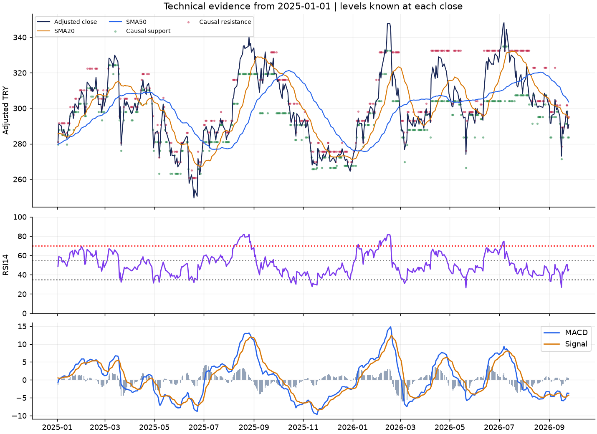
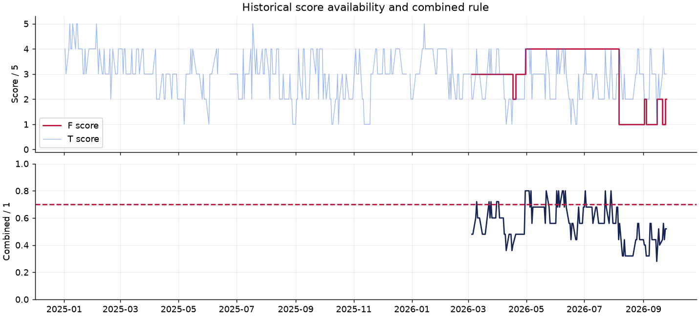
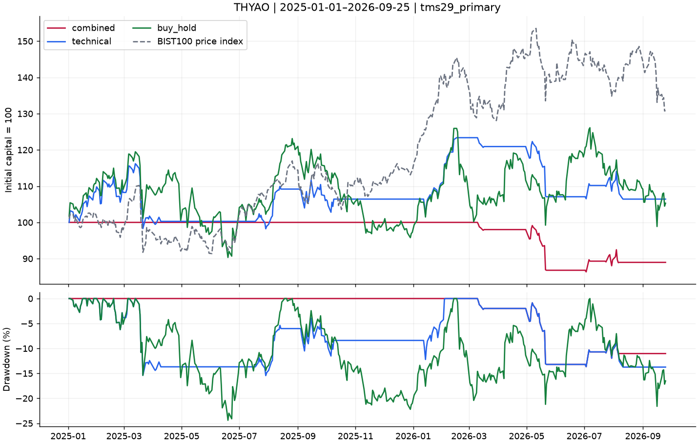

1 · Intro, disclaimer, research question
ON SCREEN
- OBS: 01 · Intro (slide 1) Ctrl+Shift+F1
- Title slide (slide 1)
docs/PROPOSAL.md, research question
SAY
Hi, I'm Yavuz Selim Gezginci. This is my CSE481 Engineering Economics term project for Doç. Dr. Alper Özcan.
I built a Python system that analyses Turkish Airlines, THYAO, using Yahoo Finance prices and Fintables financial statements, backtests a rule-based strategy, and lets an AI agent explain the results through MCP tools. The agent is a model I fine-tuned myself, and it runs entirely on my laptop.
My question: does a fundamental filter change the risk and return of a technical strategy, compared with technical-only trading, buy-and-hold and BIST 100? This is educational research, not investment advice.
2 · Architecture and data
ON SCREEN
- OBS: 02a · Architecture (slide 3) Ctrl+Shift+F2, then 02b · Data files (VS Code) Ctrl+Shift+F3
- Slide 3, "System Architecture"
data/raw/market/THYAO.IS.csvdata/processed/fintables_tms29_observations.csv
.\.venv\Scripts\python.exe -m bist_analytics.cli --config config/tms29.yaml import-tms29SAY
The architecture follows the instructor's pipeline. Market data and Fintables data feed technical and fundamental analysis. Both feed a combined score, then the strategy, the backtest, and finally the MCP agent that explains the result.
Prices come from yfinance: THYAO.IS for the stock, XU100.IS for BIST 100 and TRY=X for the dollar rate, each with full OHLCV columns, cached so the study reproduces offline. Evaluation runs from January 2025 to 25 September 2026, which is 437 trading sessions.
Fundamentals come from Fintables-hosted original reports after Turkey's TMS 29 inflation accounting. The importer checks seven report versions and 56 accounting identities, then writes 238 dated observations. A number only enters the strategy after its report was published. That prevents look-ahead bias on the fundamental side.
3 · Technical and fundamental analysis
ON SCREEN

SAY
On the technical side I calculate SMA and EMA 20 and 50, RSI 14, MACD, and volume features. Support and resistance come from pivots that need five sessions on each side to be confirmed. They are then clustered into zones, and a pivot is never used before it is confirmed.
On the fundamental side I calculate growth, profitability, leverage, liquidity and valuation. At the last date, using June 2026 statements:
| Metric | Value | Metric | Value |
|---|---|---|---|
| Revenue growth | 37.55% | Net debt / EBITDA | 4.25 |
| Net profit growth | 10.88% | P/E | 3.58 |
| ROE | 12.66% | P/B | 0.39 |
So revenue is growing fast and the valuation is low, but ROE is weaker and leverage is high, which is typical for an airline. These are nominal lira, so some of the growth is inflation.
4 · Scores and trading rules
ON SCREEN

SAY
The fundamental score gives 0 to 5 points: revenue growth above 15 percent, profit growth above 15 percent, ROE above 20 percent, net debt to EBITDA below 4, and a P/E at or below its past median. I chose 4 instead of 2 because airlines carry heavy lease debt, and I tested 2 as well.
The technical score also has five points. The combined score is 0.6 technical plus 0.4 fundamental.
The rule buys when the fundamental score is at least 3, the combined score at least 0.70, the trend is up and price is near support. It exits on an 8 percent loss, after 40 sessions, or when the trend or fundamentals weaken. Signals use today's close and execute at the next open, with 10 basis points commission and 5 slippage.
5 · Backtest results
ON SCREEN

SAY
| Strategy | Return | Max DD | Sharpe | Trades | Exposure |
|---|---|---|---|---|---|
| Combined | −11.03% | −13.66% | −0.76 | 4 | 6.64% |
| Technical only | 6.42% | −15.45% | 0.29 | 13 | 34.55% |
| Buy and hold | 5.29% | −24.40% | 0.25 | 0 | 100.00% |
| BIST 100 | 30.85% | −17.06% | 0.76 | – | – |
The honest result: the fundamental filter made the strategy very selective. It was invested only 6.64 percent of the time and had the smallest drawdown. But it lost 11.03 percent and trailed BIST 100 by 41.88 points. Four trades is far too few to draw a conclusion.
For sensitivity, I ran declared variants on 2023 to 2024 data: entry thresholds 0.65 and 0.75, a 2x debt limit, and different costs. Returns ranged from 43.17 to 55.09 percent, and I report them all without picking a winner.
The optional machine-learning model in section 7 was not built; my proposal excluded it from scope.
6 · MCP tools and the fine-tuned model
ON SCREEN
- OBS: 06a · MCP tools Ctrl+Shift+F7, 06b · Fine-tuning Ctrl+Shift+F8, 06c · Base vs fine-tuned Ctrl+Shift+F9
- OBS: 05 · Performance chart Ctrl+Shift+F6
- OBS: 04 · Scores chart Ctrl+Shift+F5
- OBS: 03 · Technical chart Ctrl+Shift+F4
- Slide 5, "MCP Tools"
- Slide 6, "Fine-Tuning Pipeline"
- Slide 8, base vs fine-tuned table
SAY
The MCP server exposes the same Python functions as 21 read-only tools, including the ones the spec lists: stock history, indicators, support and resistance, fundamentals, scores, signals and backtest, plus a knowledge-base search. No tool can trade, and the agent gets every number from a tool. The scenario tools also return their comparisons already worked out, like which bank lagged most and the label its rule gives, so the model copies results instead of doing arithmetic.
The agent model covers the instructor's six points. The base model is Qwen 2.5 3B Instruct, under the Qwen Research License. I picked 3B because 7B didn't reliably fit on a free Colab T4.
The data is 400 conversations built by replaying real tool calls on 18 stocks: 100 sector, 60 weekday, 100 reversal, 50 fundamental and 90 unsafe or unavailable-data cases, split 80/20. Every number in a training answer had to appear in the tool output, and the five presentation questions were held out. The training is QLoRA, rank 16, alpha 32, 3 epochs, 50 minutes on a T4, final eval loss 0.0032. It runs locally as a 1.9 GB GGUF file in Ollama under the name bist-qwen, fully on my laptop's 4 GB GPU.
In the comparison on 20 questions, I tested both models two ways. In the setup my agent uses, the base model never calls a tool and 7 of its 20 answers contain invented numbers; the fine-tune calls the planned tool in 19 of 20, with one ungrounded answer. But if the tool definitions are sent the standard way, the base model is the better agent, because my fine-tune was trained without them and starts chaining extra tools. Both models had zero advice leaks.
The limitations: it reads tool results well but can attach a figure to the wrong stock, it's over-cautious outside its five question types, eleven of twenty eval answers said "analysis unsafe" when only two should, and there's no RLHF.
7 · Live demo
ON SCREEN
- OBS: 07 · Live demo (terminal) Ctrl+Shift+F10
- PowerShell at the repo root, font at 18pt or larger
.\.venv\Scripts\python.exe scripts/ask.py "Is there a day-of-the-week effect in KCHOL.IS daily returns between 2025-07-01 and 2026-06-30?"ollama psnetstat -ano | findstr 11434SAY
Now it's live, with a question the model hasn't seen in this form: is there a day-of-the-week effect for Koç Holding? The question doesn't name a tool, so the model has to pick one.
Each line here is a real MCP call. The model chose the weekday test. It reads the tool's summary and writes the answer without making up numbers.
[When it finishes:] The answer is one of the eight educational labels, and under it the grounding audit lists every figure in the answer and confirms each one appears in a tool output. ollama ps shows the model running 100 percent on my laptop GPU, and netstat shows it's served on localhost port 11434, so no cloud AI is involved.
8 · Harness and extra studies
ON SCREEN
- OBS: 08a · Harness (slide 9) Ctrl+Shift+F11, then 08b · Scenarios (slide 7) Ctrl+Shift+F12
- Slide 9, harness table
- Slide 7, scenarios
SAY
A five-stage harness measures what each layer adds. Giving the model tools raises evidence coverage from 0 to 1.0, and it stays there. The fine-tuned model also keeps the rules in all five stages, with an educational caveat and no recommendation, while the base model does that in two of five. Numeric exactness stays at 0 for both: neither 3B model fills all eleven strict fields of that question exactly. So this shows the architecture works, not that a small model is precise.
I also ran four scenario studies on ten BIST stocks in five sectors, for example 1,458 technical reversal events. The same tools generated the fine-tuning data, over an 18-stock universe.
9 · Tests, limitations, close
ON SCREEN
- OBS: 09a · Tests (terminal) Ctrl+Alt+Shift+F1, then 09b · Limitations (slide 11) Ctrl+Alt+Shift+F2
pytestoutput- Slide 11, limitations
- File explorer showing the deliverables
.\.venv\Scripts\pytest.exeSAY
All 93 tests pass. They check things like indicator maths, pivot timing, publication dates, costs and next-open execution, the knowledge-base search, the label rules and the grounding audit. A clean-environment reproduction matches the results.
The main limitations: one company's fundamentals, a short period, four trades, nominal lira returns, and a small model that reads tool results well but can attach a figure to the wrong stock.
The package contains the code, notebook, README, proposal, report, Fintables dataset, backtest tables, charts, agent traces and slides. The main lesson: an AI agent is most useful when it drives reliable tools instead of inventing financial conclusions. Thanks for watching.